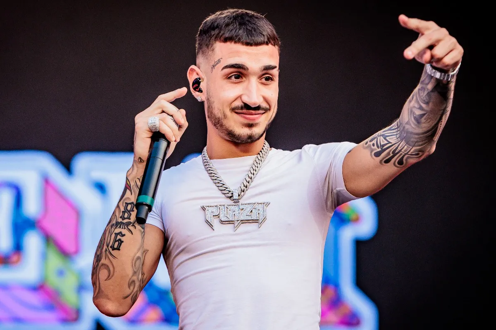

Capo Plaza, nome d'arte di Luca D'orso, è un rapper/trapper salernitano, classe '98.
Si è distinto fin da giovanissimo per il suo talento, ha collaborato con l'amico Peppe Socks
per poi esplodere definitavemente nel 2018 con l'uscita dell'album "20" celebrativo per i suoi 20 anni
questo album lo consacra come uno dei più forti nel panorama del rap italiano con l'uscita di pezzi
che vantano più di 100mln di streaming su Spotify come Tesla (con Sfera Ebbasta e Drefgold), Giovane fuoriclasse e Uno Squillo.
